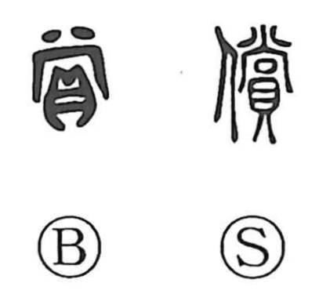

償

Kun: tsugunau | On: shou
to compensate ・ to make amends ・ recompense
Explanation
償 is a phono-semantic character: the person radical 亻 supplies the sense of a human act, while 賞 serves as the phonetic and carries the core idea. That idea goes back to 尚/商, which in bronze inscriptions appears in phrases like 商貝, “to bestow shells,” shells being valuables; thus 商 bore the sense of granting. With 貝 added, this developed into 賞, “to grant, reward.” When that notion is applied to setting a loss right—giving back or making up for something—the character is written with the person radical as 償. Early glosses capture this with 還, “to return,” and the sense endures in compounds such as 償還 (reimbursement) and 補償 (indemnification).